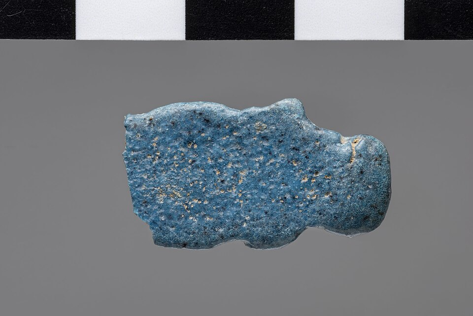

Что такое скарабей
Скарабей — навозный жук — один из самых популярных амулетов Египта, знак становящегося солнца. В жуке, катящем навоз, видели модель космоса: так же, как скарабей катит шар, катят солнце по зари.
Хепри и солнце
Утреннее солнце читали как Хепри — «становящийся»: солнце, возникающее из себя, в образе скарабея. Его не толкает никто — оно само «становится»: модель самовозникновения мира. После ночи в Дуате солнце рождается заново — ежедневное воскресение.
Именные скарабеи — печати фараона
Скарабей с именем правителя был административной печатью: им запечатывали глиной товары, сосуды, документы. Знаменитый скарабей Аменхотепа III несёт имя царицы Ти — первой жены фараона — в память о браке; он в Британском музее. В Амарне делали «царские скарабеи» с сценами из семейной жизни царской четы.
Сердечный скарабей
Сердечный скарабей клали на грудь мумии, к сердцу. На суде сердце «свидетельствует» против умершего, и скарабей должен «молчать»: заговор 30B из Книги мёртвых: «О сердце моё, сердце матери моей… не выдавай господина твоего в суде сердца». Заговор древнейший: его «обнаружил» мастер Джедефхор в гробнице Микерина.